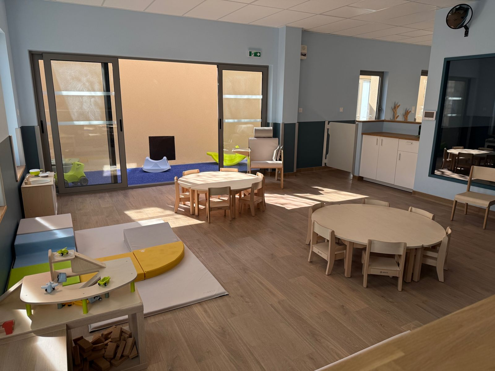
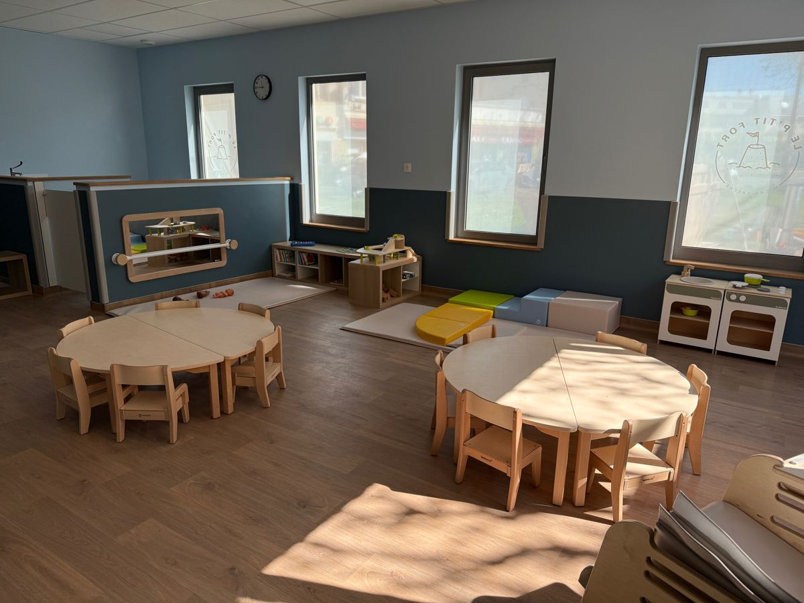
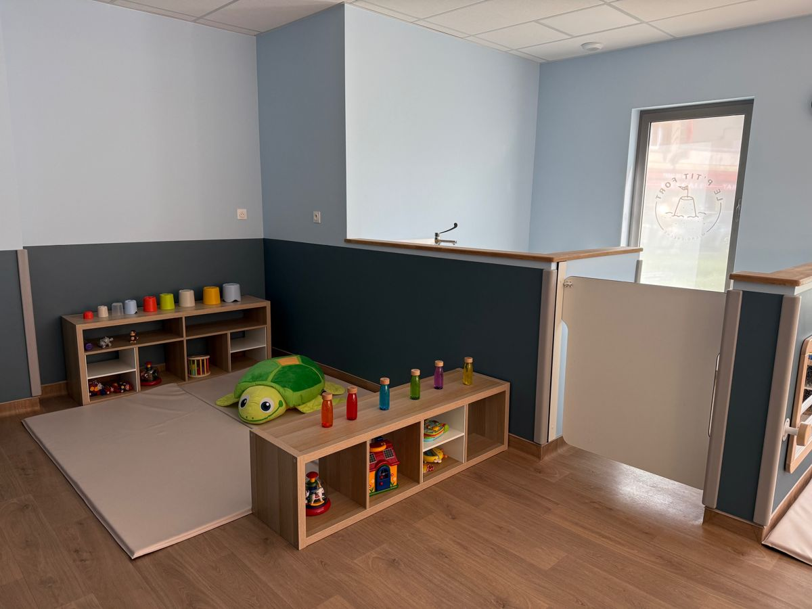
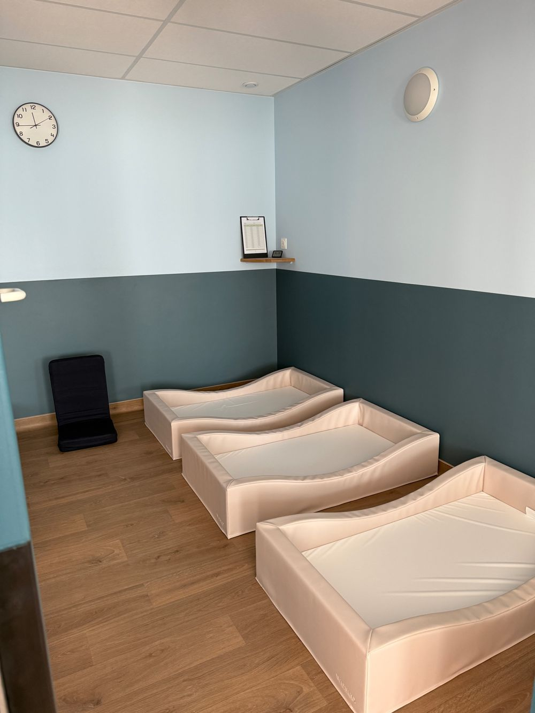
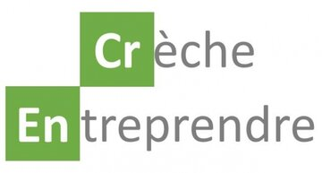
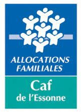

Un accompagnement individuel
Nous accueillons vos enfants en petit nombre pour respecter le rythme et les besoins de chacun, tout au long de la journée.
Micro-crèche à Vigneux-sur-Seine
Nous accueillons 12 enfants de 3 à 36 mois, en petit groupe, dans un cadre doux et lumineux où les besoins de chacun sont respectés.

Nous accueillons vos enfants en petit nombre pour respecter le rythme et les besoins de chacun, tout au long de la journée.
Pour les enfants comme pour les professionnelles : travail d’équipe, communication et transparence. Un lieu aménagé avec soin, avec un mobilier et des jeux de qualité.
Soutien à la parentalité, ateliers de sensibilisation et bien-être : la micro-crèche est aussi un lieu de rencontre et d’échange.



Remplissez la demande en ligne, ou appelez-nous au 07 60 21 69 59.
Faire une demande de place
Crèche Entreprendre est une association de professionnels qui fournit aide et assistance aux micro-crèches.

La CAF de l’Essonne nous a accompagnés dans la création et la subvention du projet.
Réseau associatif de financement et d’accompagnement des créateurs, repreneurs et développeurs d’entreprise.
Projet financé par la Région Île-de-France.
Charte régionale des valeurs de la République et de la laïcité à télécharger ici (PDF).
Téléphone : 07 60 21 69 59
E-mail : contact@leptitfort.fr